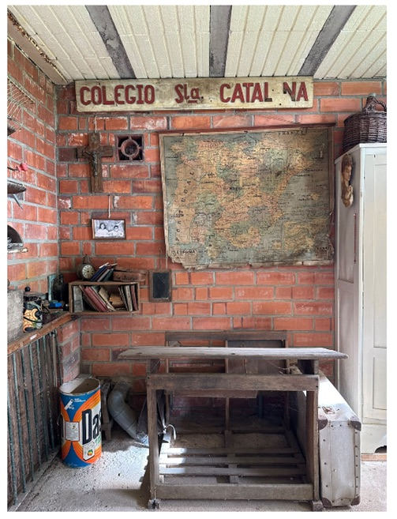
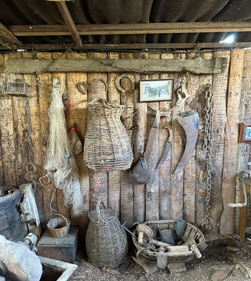

Muzeum: spojrzenie na przeszłość z teraźniejszości

Wejście do tej przestrzeni to podróż w czasie, do sposobu życia naznaczonego samowystarczalnością i jak najlepszym wykorzystaniem własnych zasobów. Dawne sprzęty, narzędzia pracy, fotografie, mapy i pamiątki przybliżają nam czasy, gdy codzienne życie było ściśle związane z ziemią, pracą i wiedzą przekazywaną z pokolenia na pokolenie.
Muzeum zaprasza nas do odkrycia tego etapu naszej historii poprzez przedmioty i fotografie należące do rodziny z Horty, z Les Vaqueres. To świadectwo, które pozwala poznać zwyczaje, prace i sposoby życia świata, który przeszedł od gospodarki na własne potrzeby do gospodarki coraz bardziej nastawionej na produkcję.
Po drodze znajdujemy też wspomnienia naszej osobistej i wspólnej historii: szkołę, rzemiosła, prace domowe i drobne rzeczy, z których składała się codzienność rodzin z Horta de Lleida.
Muzeum pokazuje, że samowystarczalność była nie tylko sprawą pracy w polu, ale też domowej wiedzy, praktycznych umiejętności i wykorzystywania wszystkiego, co było pod ręką: robienia mydła w domu, wiązania mioteł i korzystania z tego, co dawała okoliczna ziemia, a także umiejętności szycia ubrań i ich cerowania: łatania i przerabiania, by dłużej służyły.
Chcieliśmy stworzyć projekt o dużej wartości dziedzictwa i wartości ludzkiej. Dzięki przedmiotom, fotografiom i wspomnieniom rodziny z Les Vaqueres przywróciliśmy sposób życia, który dziś wydaje się odległy, ale pomaga zrozumieć, skąd pochodzimy.
W tym muzeum nie znajdziesz zwykłego spisu starych sprzętów: staraliśmy się opowiedzieć historię ludzi, którzy za nimi stoją, ich wiedzy, potrzeb, wysiłków, a także chwil szczęścia.
Przedmioty przechowują pamięć o rzeczach; opowieści, które snujemy, ożywiają je i pomagają zrozumieć, kim jesteśmy i skąd pochodzimy.
Zwiedzanie prowadzi trzema wątkami:
- Życie codzienne: jak rodziny żyły, pracowały i się organizowały.
- Samowystarczalność: jak najlepsze wykorzystanie zasobów oraz wiedza i umiejętności, które pozwalały żyć skromnie.
- Rodzina i wspólna pamięć: ludzie, wspomnienia i drobne historie, które pomagają zrozumieć epokę.
Samowystarczalność nie oznaczała, że rodzina wytwarzała absolutnie wszystko, lecz że starała się jak najmniej zależeć od zasobów z zewnątrz.
Przeszłość i teraźniejszość w lustrze

Przy wejściu wita nas duże lustro z napisem, który zaprasza, by się zatrzymać i popatrzeć.
Cenne spojrzenie na wczoraj, które spotyka się z dniem dzisiejszym, poprzez pamięć i fotografię w odcieniach sepii.
Lustro to coś znacznie więcej niż ozdoba: to metafora dialogu przeszłości z teraźniejszością. Patrząc w nie, widzimy nie tylko własne odbicie, ale też rozpoznajemy się jako część historii, która zaczęła się przed nami i w pewien sposób w nas trwa.
To zaproszenie, by spojrzeć wstecz i zrozumieć, skąd pochodzimy, docenić to, co odziedziczyliśmy, i odkryć więzi łączące nas z poprzednimi pokoleniami.
Z Pirenejów do Horta de Lleida: historia rodziny

Ten ilustrowany komiks opowiada historię rodziny z Les Vaqueres, od jej korzeni w górach po przybycie i osiedlenie się na równinie Lleidy.
Rysunki pokazują przebytą drogę, zmiany sposobu życia i początek nowego rozdziału na innej ziemi. To historia rodzinna, która jest zarazem częścią szerszej migracji: wielu rodzin z Pirenejów, które zeszły na niziny w poszukiwaniu nowych możliwości i pomogły ukształtować i zasiedlić Horta de Lleida.
Komiks przybliża życie tych pokoleń, które wysiłkiem, ciężką pracą i umiejętnością przystosowania zapuściły korzenie na nowej ziemi. To zapis rodzinnej pamięci, a zarazem fragment historii zasiedlania i przemian Horta de Lleida.
Za każdą rodziną stoi droga, miejsce pochodzenia i historia warta opowiedzenia. Te rysunki pomagają ją odzyskać i zachować żywą pamięć o pokoleniach, które były przed nami.
Les Vaqueres: trzy pokolenia, jedna historia życia

Ta ramka pomaga zrozumieć sposób organizowania życia, pracy, relacji z ziemią i przekazywania wiedzy.
Gdy ludzi, którzy żyli w określony sposób, już nie ma, ich przedmioty, fotografie i wspomnienia stają się świadkami świata, który nie wróci, ale który warto ocalić.
Ta ramka jest wyjątkowa, bo opowiada prawie stuletnią historię rodziny w trzech różnych momentach. To nie tylko zbiór zdjęć: to wizualna opowieść o ciągłości rodziny, o zmianach między pokoleniami i o tym, jak przemieniały się sposoby życia. Trzy migawki, w których widzimy upływ czasu, zmianę pokoleń i przemianę sposobu życia.
Lata 30.: początek nowego życia
Pierwsze zdjęcie przedstawia małżeństwo i ich córki, członków rodziny, którzy zeszli z gór na równinę Lleidy, by rozpocząć tam nowy rozdział. To pierwsze postacie historii naznaczonej ciężką pracą, zakorzenieniem w ziemi i budowaniem nowego domu.
Lata 60.: nowe pokolenie przejmuje pałeczkę
Drugie zdjęcie przenosi nas w czas zmian. Pałeczkę przejęło nowe pokolenie: Antònia wyszła za mąż i jest już matką dwojga dzieci. Rodzina się powiększa, a życie toczy się dalej.
Zdjęcie przechowuje też pamięć o historii rodziny naznaczonej wojną domową i emigracją. Widać na nim samochód krewnych, którzy wyemigrowali do Francji i po latach mogli wrócić do Hiszpanii. Szczegół, który mówi o ponownych spotkaniach, odległości i więzach rodzinnych, których nie zdołały zerwać ani czas, ani polityka.
2010: Lola, żywa pamięć dawnego sposobu życia
Ostatnia seria zdjęć prowadzi nas do Loli, ostatniej z Les Vaqueres, która zmarła w 2010 roku. W społeczeństwie, które już głęboko się zmieniło, wciąż zachowywała i praktykowała część wiedzy i zwyczajów gospodarki samowystarczalnej. To kluczowa postać muzeum: pomost między światem samowystarczalności a dzisiejszym społeczeństwem.
Wciąż robiła miotły z roślin botja zbieranych w La Mitjana i warzyła mydło w domu, podtrzymując tradycyjne umiejętności, które były częścią codzienności poprzednich pokoleń.
Wraz z Lolą zamyka się pewien rozdział, ale pozostaje pamięć o sposobie życia opartym na wykorzystywaniu tego, co daje ziemia, na pracy rąk i na wiedzy przekazywanej z pokolenia na pokolenie.
Te zdjęcia przypominają, że historia kryje się nie tylko w wielkich wydarzeniach, ale też w życiu ludzi, w ich codziennych gestach i w drobnej wiedzy, która, jeśli się jej nie ocali, może zniknąć razem z nimi.
Walizki: wspomnienia wygnania, powrotu i nadziei

Te walizki opowiadają trudną historię, ale mówią też o zdolności ludzi do odbudowania życia. Symbolizują przymusowe podróże, niepewność, rozdzielone rodziny i nadzieję na znalezienie miejsca, by zacząć od nowa.
To nie są walizki na wakacje. Kryją historie życia, rozłąki i przetrwania. Symbolizują drogi, którymi niektórzy członkowie rodziny, jak tylu innych ludzi, musieli pójść w trudnych czasach: emigrację do Francji, by uciec przed wojną i represjami, oraz powrót w góry po wypędzeniu z domu.
Za każdą walizką stoi podróż, która nie zawsze była wyborem, lecz koniecznością narzuconą przez okoliczności. Wyjechać znaczyło zostawić dom, ziemię, wspomnienia, a często część rodziny, w nadziei na znalezienie bezpieczniejszego miejsca do życia.
Dziś te walizki wciąż przechowują część tamtej historii. Mieszczą rodzinne dokumenty i pamiątki: akty własności, kartki żywnościowe, fotografie i inne ślady czasów naznaczonych wojną, niedostatkiem i przemianami społecznymi.
Stały się małymi archiwami pamięci, które pomagają odtworzyć przeżycia rodziny i lepiej zrozumieć, jak tamte wydarzenia wpłynęły na codzienne życie ludzi.
Bo czasem walizka nie zawiera tego, co postanawiamy zabrać, lecz wszystko, co musimy zostawić.
Nauka szycia: ubrać całą rodzinę

W gospodarce rodzinnej opartej na samowystarczalności oszczędzanie pieniędzy i ograniczanie wydatków do minimum było koniecznością. Wiele prac, które dziś zlecamy fachowcom albo rozwiązujemy, kupując coś nowego, wykonywano wtedy w domu, własnymi siłami i wiedzą rodziny.
Maszyna do szycia jest bohaterką zdjęcia, ale za nią kryje się historia nauki, inicjatywy i domowej ekonomii.
To historia Antònii, jednej z sióstr Vaqueres i matki dwojga dzieci, która postanowiła nauczyć się szyć. Ukończyła kurs krawiecki (corte y confección) i otrzymała świadectwo potwierdzające, że potrafi szyć ubrania dla całej rodziny.
Ramka przechowuje pamięć o tej nauce: świadectwo z kursu i zdjęcie grupowe wszystkich młodych kobiet, które w nim uczestniczyły. Obok stoi maszyna do szycia, niezbędne narzędzie, by zamieniać tkaninę w ubrania, robić przeróbki i przedłużać życie odzieży.
Szycie w domu oznaczało dużą oszczędność dla rodzinnego budżetu, ale też zdobycie przydatnej i cennej umiejętności. Był to sposób zaspokajania codziennych potrzeb dzięki pomysłowości, zaangażowaniu i własnej pracy.
Maszyna do szycia staje się w ten sposób świadkiem sposobu życia, w którym umiejętność zrobienia czegoś samemu była istotną częścią samowystarczalności.
Szkoła: jedna ojczyzna, jeden język, jedna religia

Ten kącik odtwarza atmosferę wiejskiej szkoły w czasach dyktatury Franco i przenosi nas do epoki, gdy edukacja była silnie naznaczona ideologią reżimu.
Znajdziemy tu niektóre typowe elementy klas z tamtych lat: drewniane ławki, książki, przybory szkolne i mapę wiszącą na ścianie. Jest też szyld szkoły Santa Catalina, która stała w okolicy: przypomnienie dawnych szkół wiejskich, które były częścią życia wielu rodzin z Horty. W dzielnicy Grenyana uzupełniała ją szkoła państwowa, mieszcząca się w zakrystii kościoła.
Edukacja za Franco opierała się na trzech głównych zasadach: jedna ojczyzna — Hiszpania; jeden język — hiszpański; i jedna religia — katolicyzm. Szkoła stała się więc narzędziem przekazywania wartości patriotycznych, religijnych i społecznych narzuconych przez reżim.
W Katalonii język kataloński wykluczono z oficjalnego nauczania i życia szkolnego, a hiszpański stał się obowiązkowym językiem szkoły. Religia katolicka ze swej strony zajmowała centralne miejsce w kształceniu i wychowaniu dzieci.
Ta przestrzeń zaprasza do wspomnienia, jak wyglądała szkoła w tamtych czasach, czego uczono i w jakim świecie dorastały dzieci. Pozwala też zastanowić się, jak szkoła, poza nauką czytania i pisania, może odzwierciedlać społeczeństwo i moment historyczny, do którego należy.
Mapa, nieodłączny element każdej klasy, przypomina też o roli szkoły w przekazywaniu wiedzy i wizji świata tamtej epoki.
Życie na świeżym powietrzu: praca w polu i jak najlepsze wykorzystanie ziemi

Życie na świeżym powietrzu toczyło się wokół uprawy ziemi i czerpania z niej wszystkiego, co potrzebne do życia. Każda uprawa miała konkretne przeznaczenie i miała wyżywić zarówno ludzi, jak i zwierzęta gospodarstwa.
Na polach uprawiano lucernę i inne rośliny pastewne dla bydła oraz pszenicę na mąkę i chleb, która dawała też słomę do wielu zastosowań. Uprawiano również buraki dla świń, rzepę dla krów i kukurydzę dla kur.
Ogród warzywny był wykorzystywany przez cały rok. Uprawiano w nim warzywa dla rodziny, w rytmie pór roku. Wzdłuż brzegów pól rosło kilka drzew owocowych, których plony wykorzystywano przez cały rok.
Nic nie mogło się zmarnować. Gdy przychodził czas zbiorów, trzeba było myśleć też o zimie. Gromadzono żywność i przygotowywano przetwory, dżemy i inne domowe wyroby, by mieć owoce i warzywa, gdy świeżych już nie było.
Szczególnie przyciąga uwagę canyís, trzcinowa półka zawieszona pod sufitem. Pleciona z trzciny, służyła do przechowywania owoców, zwłaszcza jabłek, przez miesiące zimowe. Zawieszona wysoko, pozwalała dobrze wykorzystać przestrzeń i trzymać żywność w odpowiednich warunkach, by się nie psuła i by nie dobrały się do niej szczury.
Ten zbiór narzędzi, sprzętów i tradycyjnych przedmiotów pokazuje sposób życia, w którym praca podążała za rytmem natury. Uprawa, zbiory, karmienie zwierząt i przechowywanie żywności były częścią jednego cyklu, opartego na jak najlepszym wykorzystaniu własnych zasobów i planowaniu potrzeb na cały rok. Samowystarczalność nie polegała po prostu na wytwarzaniu żywności, lecz na umiejętności planowania i wykorzystywania zasobów tak, by pokryć potrzeby całego roku.
Była to gospodarka, w której prawie wszystko miało zastosowanie i w której codzienna wiedza była niezbędna, by utrzymać dom i rodzinę.
Mleczarstwo

Ta przestrzeń opowiada o kolejnej kluczowej działalności rodzinnej gospodarki: produkcji i sprzedaży mleka. Pokazuje, jak niektóre rodziny po osiedleniu się w Horta de Lleida dodały do pracy w polu hodowlę i uczyniły z mleka źródło dochodu. Zdjęcie przechowuje też sprzęty używane w tej pracy i pomaga wyobrazić sobie, jak działał ten mały rodzinny interes.
Gdy rodziny z Pirenejów osiedlały się w Horta de Lleida, wiele z nich dodało do codziennej pracy hodowlę bydła. Produkcja mleka stała się sposobem na uzupełnienie rodzinnego budżetu i zarobek z własnej pracy.
W Les Vaqueres mleko szło dwiema drogami: część sprzedawano bezpośrednio sąsiadom z okolicy, którzy przychodzili do gospodarstwa kupować je na co dzień, a resztę wożono na sprzedaż do Lleidy.
Mleczarstwo było więc zajęciem łączącym życie domu z jego najbliższym otoczeniem. Z jednej strony zaopatrywało sąsiednie rodziny w świeże mleko, z drugiej pozwalało rodzinie wozić swój produkt do miasta.
Wystawione sprzęty mleczarskie — maselnice, miarki i bańki — przypominają, jak mleko zbierano, przechowywano i rozprowadzano. Były niezbędne w zajęciu wymagającym stałej, codziennej pracy, związanej z porami dojenia i koniecznością dostarczenia klientom świeżego mleka. Widać nawet stołek do dojenia.
Ta praca pokazuje, jak rodziny łączyły uprawę z hodowlą, by jak najlepiej wykorzystać to, co miały. Ziemia karmiła zwierzęta, zwierzęta dawały mleko, a jego sprzedaż pomagała utrzymać dom.
Mleczarstwo jest przykładem tego, jak samowystarczalność i zarobek często szły w parze: produkować na własne potrzeby rodziny, ale też sprzedawać nadwyżkę, by mieć pieniądze na inne domowe wydatki.
Samowystarczalność: wykorzystać wszystko, co daje ziemia

Ta część muzeum oddaje ideę samowystarczalności, która nadaje mu sens. Zdjęcie przedstawia szeroki wybór prostych, ale bardzo wyspecjalizowanych narzędzi, które pozwalały korzystać z tego, co dawało środowisko naturalne.
W tamtych czasach przyroda była jak spiżarnia w zasięgu ręki rodziny, a trzeba było umieć wykorzystać wszystko, co oferowała. Każde zajęcie miało własne narzędzia, a każdy przedmiot zaspokajał konkretną potrzebę codziennego życia.
Te narzędzia mówią o tamtym sposobie życia i o umiejętności znajdowania pożywienia w różnych częściach krajobrazu: na polach, w ogrodzie, na drzewach, w rzece i na miedzach.
Znajdziemy tu na przykład caragolera do przechowywania ślimaków; filat, sieć do łowienia ryb w rzece; koszyczek do zbierania kurzych jajek; i ratera, pułapkę na małe ptaki.
W skrzynce są też różne narzędzia pracy: serpeta do zbioru oliwek, kołki do siewu kukurydzy, sierp i inne narzędzia, z których każde miało w polu swoje zadanie.
Większość zebranej żywności zjadała rodzina. Gdy zbiory lub zbieractwo dawały więcej, niż było trzeba, nadwyżkę można było sprzedać na targu. Dzięki temu to, co dawała ziemia, nie tylko pomagało wyżywić dom, ale mogło też przynieść niewielki dochód.
Zdajemy sobie sprawę, że wyobraźnia, spostrzegawczość i znajomość otoczenia były równie ważne jak same narzędzia. Wykorzystywanie wszystkiego było koniecznością, ale też sposobem rozumienia życia.
El mandongo: świnia, spiżarnia na cały rok

W samowystarczalnej gospodarce rodzinnej świnia odgrywała kluczową rolę. Wraz z drobiem, który dawał jajka i mięso, była jednym z głównych źródeł białka w diecie.
Świnię przez cały rok karmiono resztkami z domu i ogrodu, aż przychodził czas świniobicia, tradycyjnie w najzimniejszych miesiącach, często w styczniu. Niskie temperatury ułatwiały obróbkę i przechowywanie mięsa.
Mandongo było czymś znacznie więcej niż zabiciem świni: to cały szereg prac, które wymagały organizacji, doświadczenia i wiedzy przekazywanej z pokolenia na pokolenie. Każdą część zwierzęcia trzeba było wykorzystać i przerobić na żywność, która przetrwa miesiące.
Stosowano w tym celu różne techniki konserwacji: części mięsa suszono; robiono kiełbasy i wieszano je do dojrzewania; niektóre gotowano; przygotowywano też tupina, sposób przechowywania mięsa w tłuszczu.
Sprzęty w tej przestrzeni przybliżają tę ciężką, wspólną pracę, która zamieniała świniobicie w święto oznaczające zapasy na dużą część roku.
Świnia była, krótko mówiąc, prawdziwą rodzinną spiżarnią. Dzięki planowaniu, ciężkiej pracy i wiedzy o konserwacji jedno świniobicie dawało różne wyroby mięsne na wiele miesięcy, aż cykl zaczynał się od nowa w kolejnym roku. Mandongo to doskonały przykład tej kultury przezorności: nie chodziło tylko o zdobycie jedzenia, lecz o umiejętność przetworzenia i przechowania go tak, by przetrwało.
Nic nie mogło się zmarnować: każda część zwierzęcia miała zastosowanie, a każdy produkt pomagał zapewnić rodzinie dość jedzenia.
Czas wolny: karty, radio i rozmowy

Codzienne życie to nie tylko praca i obowiązki. Były też chwile na odpoczynek, trochę zabawy i wspólny czas w gronie rodziny.
W niektóre wieczory, po skończonej pracy, albo w niedziele, gdy przyjeżdżała Carmeta, siostra mieszkająca w Lleidzie, i wszyscy się zbierali, ten kącik stawał się małym miejscem spotkań. Były to chwile, na które wszyscy czekali.
Karty były jedną z najczęstszych rozrywek. Partia była okazją, by spędzić czas, porozmawiać i wspólnie się pośmiać. Tymczasem radio, zawsze włączone, dotrzymywało im towarzystwa muzyką, wiadomościami i audycjami, które były częścią codzienności, jak słuchowisko czy program Señora Francis.
Był też czas na opowiadanie historii, dzielenie się wspomnieniami, oglądanie zdjęć i wymianę nowin. Niewiele było trzeba, by miło spędzić czas: wystarczała talia kart, radio i towarzystwo rodziny.
Ten kącik przypomina o innej stronie samowystarczalności: prostym życiu, w którym czas wolny organizowano wokół domu i więzi rodzinnych. W muzeum pokazuje najbardziej ludzką stronę życia rodzinnego: rodziny także znajdowały sposoby, by cieszyć się życiem.
Bo poza pracą i codziennymi potrzebami to także te małe wspólne chwile tworzą wspomnienia rodziny.
Ten kącik mówi o bogactwie, które nie mierzyło się pieniędzmi, lecz czasem spędzonym razem.
Waga: ku nowej gospodarce rolnej

Ta ostatnia przestrzeń jest szczególnie ważna, bo zamyka zwiedzanie muzeum kluczową myślą: przemianą rodzinnej gospodarki, która krok po kroku przeszła od samowystarczalności i gospodarki na własne potrzeby do upraw na produkcję i sprzedaż.
Stopniowo dawne uprawy zbóż ustępowały miejsca drzewom owocowym, głównie gruszom i jabłoniom. To, co wytwarzało gospodarstwo, nie było już tylko na potrzeby domu: sprzedaż na rynku stawała się coraz ważniejsza.
Trzy przedmioty pomagają zrozumieć tę zmianę.
Zdjęcie: nowe uprawy, nowa praca
Na jednym ze zdjęć widzimy Antònię i jej męża Josepa, którzy przygotowują ciecz siarkowo-wapienną (wielosiarczek wapnia), by opryskać drzewa owocowe i chronić je przed chorobami i szkodnikami. To obraz przystosowania do nowego typu rolnictwa, które wymagało nowej wiedzy, technik i pielęgnacji.
Waga: ważyć, by sprzedawać
Waga stała się niezbędnym narzędziem, gdy sadownictwo wysunęło się na pierwszy plan. Ważono na niej każdą skrzynkę gruszek i jabłek zebranych w gospodarstwie — konieczny krok, by przygotować plony i je sprzedać.
Kalibrownica: owoce na rynek
Drugim przedmiotem jest kalibrownica, którą sprawdzano wielkość gruszek i sortowano je według rozmiarów wymaganych do sprzedaży. Owoce nie były już cenione tylko na rodzinny stół: musiały też spełniać normy jakości i klasyfikacji handlowej.
Te trzy przedmioty opowiadają o przejściu do bardziej wyspecjalizowanego rolnictwa nastawionego na rynek. Ziemia wciąż była głównym źródłem utrzymania, ale potrzeby i sposoby pracy się zmieniły.
Waga wyznacza więc koniec jednego cyklu i początek nowego: od gospodarki, która produkowała głównie, by żyć, do takiej, która musiała produkować także na sprzedaż.
Wirtualne Muzeum Tradycyjnej Techniki Rolniczej

Wirtualne Muzeum Tradycyjnej Techniki Rolniczej (MVTAT) powstało w ramach Służby Historii, Dokumentacji i Dziedzictwa Wydziału Historii Uniwersytetu w Lleidzie.
Muzeum chce pokazać szeroki wachlarz narzędzi i technik, które kształtowały historię życia na wsi, zanim paliwa kopalne upowszechniły się w rolnictwie i w sprzedaży jego plonów. Prezentuje też pierwsze ciągniki i maszyny, by można je było porównać z narzędziami tradycyjnego rolnictwa, w którym głównym źródłem siły były zwierzęta pociągowe i praca ludzi, a także nieliczne techniki napędzane wiatrem lub wodą.
Uczestniczymy w nim, prezentując nasze własne muzeum „Eines de les Vaqueres”, w którym przemiany rolnictwa i stopniowe przejście do gospodarki rynkowej pokazano na przykładzie historii rodziny z Horta de Lleida, opowiadającej o sposobie życia całej tamtej epoki.